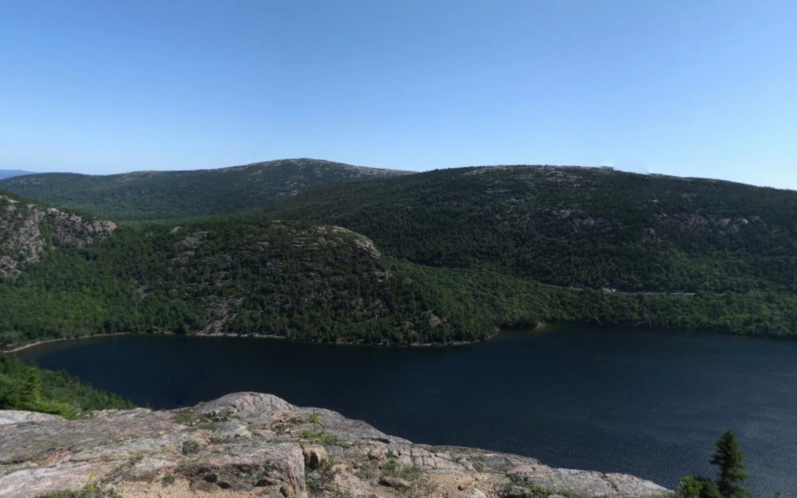

AT HOME, ELSEWHERE
山與湖，都不用趕路。

正在開一扇窗…
這裡是照片窗景，光色依當地日照模擬，並非即時影像。保留照片原有的雲與風景，讓時間輕輕走過。
山湖實景由 Matthew Petroff 拍攝，原圖 4096 × 2048，依 CC BY-SA 3.0 使用；我們轉為 WebP、製作透視預覽，衍生照片保留相同授權。其餘三張實景全景照片來自 Poly Haven，以 CC0 提供，可免費使用、修改與商用。其餘三張原圖為 1K 全景，裁切後細節較少。我們校正全景透視、調整光色並加入輕微視差。深度目前為手工近似，尚未使用 Depth Anything。
完整來源與處理紀錄 ↗
照片只在你的瀏覽器中處理，不會上傳。重新選擇窗景可還原。